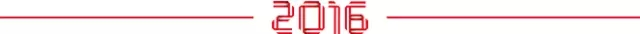
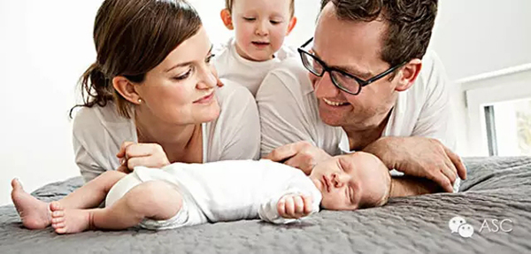
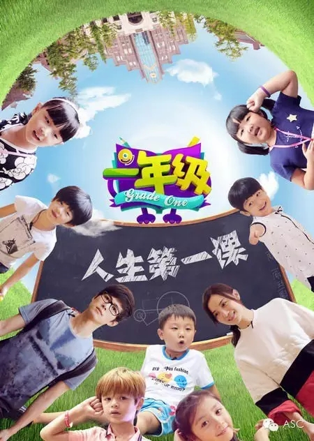
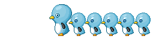
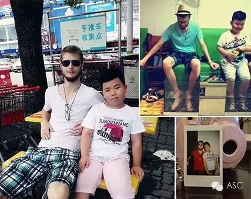
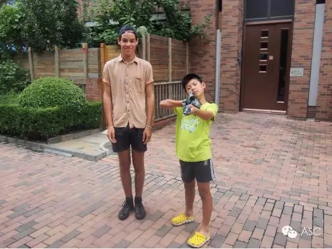

互惠动态
|
|
从全面开放二胎想起的一个小故事：别让孩子被拖拽着向前走


最近网上看了一个非常火爆的文章《唯一一代独生子女是种怎样的体验？80后都看哭了》，这篇文章很有意思。所谓的“唯一一代独生子女”其实是指的刚刚颁发出来的一个政策：十八届五中全会决定全面开放二胎，“独生子女”成为历史。一觉醒来，生于85、90年代的的人仿佛成为了唯一拥有独生子女证的一代。
这篇文章里面大概就是很多人在说自己作为独生子女的感受，有人说自己是独生子女很骄傲，有的人说其实小时候很羡慕别人的哥哥姐姐。最后文章总结说：8090后真是奇葩的一代，自己出生的时候，突然就独苗了，没有兄弟姐妹，打架都没人帮忙。好容易长大了，又鼓励多生孩子，要准备照顾4个老人……
其实现在的独生子女很多，即使是二胎开放了，相信以后还是会有很多家庭选择生一个孩子。所以“唯一一代独生子女”也不是很贴切。
是不是唯一一代独生子女不重要，之所以觉得这篇文章有意思，是觉得在里面看到了很多独生子女的内心感受。其实这个世界很公平，得到了一些什么，也会失去一些什么。独生子女虽然得到了父母全部的宠爱，但是在成长的时候却没有兄弟姐妹的感情。
独生子女往往更敏感，更独立。因为从小就是一个人长大，父母虽然是至亲，有的事情却没办法和父母分享。有的时候很多家长说自己的孩子出国了在国外很自立，一个人租房子住自己照顾自己，还能挣钱，觉得很为孩子骄傲。确实，这种独立的孩子确实令人感到骄傲，但同时对这些孩子也有一些心疼：他还那么小啊！就要一个人生活在国外。
因为是独生子女，所以自然而然的把家庭的期望都放在孩子身上，父母关注孩子，把所有的爱都专注在这一个孩子身上，可是谁说这些不是甜蜜的负担呢？有时候被太多的爱关注，孩子也会觉得有压力。每天都关注孩子，想拉着孩子往优秀的方向发展，拖拽着孩子向前走。

因为家里有一个孩子，所以家长有大把大把的时间去教育孩子、引导孩子，甚至很多母亲每天专职只是为了孩子。父母觉得这样很好，因为天天陪着孩子嘛，就觉得给了孩子全方位的爱，但是父母这样天天陪着孩子，也会占据孩子的时间的。在孩子的童年，不仅应该有父母的陪伴，同龄人之间的玩耍也很重要，因为和同龄人相处，才能处理好人际关系。湖南卫视有档节目叫《一年级》，里面有个孩子一时一刻离不开妈妈，因为妈妈每天陪着他，这直接导致他的任性，在节目里，他在人际交往方面的能力很弱。

说到这里就不得不说ASC互惠项目小故事：Sam是一所外国语学校的一年级学生，孩子入学后的一年级老师反应上课经常会有小动作。Sam的妈妈王女士为此感到担心，但是一直不知道如何改善孩子的情况。后来知道了ASC国际互惠生，就为Sam挑选了一个品学兼优的德国哥哥—迈尔斯。

改变就从这里开始了，自从德国哥哥进入家庭以后，Sam是一天也离不开他，个人也发生了很大的变化。首先是每天都有哥哥陪伴打篮球、跑步、玩耍，生活变得丰富多彩，再也不会像以前一样成沉迷于ipad，酷爱运动的德国哥哥没事就拉胖乎乎不爱运动的Sam出去跑步，外国的孩子在运动方面都会很积极，给Sam树立了很好的榜样。
他们在生活交流中都使用英语，从最初的一个个单词加上肢体语言，到后来慢慢英语可以连成句子表达，Sam的英语表达能力和理解能力都迅速提高，于是很自然地他在班上的英语课上就能表现出来，相对于语文数学得到的A，他的英语在新学期都是A+英语口语甚至是A++，老师是这样写评语的“Sam，新的学期，老师发现你的小毛病好了很多哦，而且英文的进步非常大！”王女士也表示“Sam的英语学习都是互惠生哥哥的功劳哦！”

其实很多人都觉得ASC互惠项目就是让孩子学英语的，其实不尽然，ASC互惠项目致力于全方面多角度的提升孩子的语言、生活能力。相较于现在很多家长拖拽着孩子向前走，给孩子补习班、带着孩子去各地培训中心上外教课程，ASC互惠项目其实是给了家长更温柔的方式，让家长可以通过这些温柔的教育方式提升孩子的英语能力，同时也能让孩子和同龄人交流，具有人际交往能力，尤其是很多国外孩子性格外向、思想前卫，让孩子接触优秀的同伴其实比父母给孩子灌输优秀的人格道理更重要！
多少家长以“让孩子学英语”的借口把孩子简单粗暴的丢到补习班、外教培训机构。孩子要是学不会，家长还会怀疑孩子的语言能力问题，说孩子是不是不适合学英语。其实这根本不是孩子的语言能力问题，而是家长的错误观念问题。从来不问孩子是不是愿意学，就以“为了你”的名义把孩子送到培训学校里，真的好么？
语言从来都不是冷冰冰的，语言需要的是交流。真正的交流。一对一！补习班也罢，培训班也罢，课堂终究是课堂，很多都是一种冷冰冰的教育模式，老师在前面教，学生在后面学，即使是有交流，也很难是一对一。正因想要终结这种传统的教育方式，ASC互惠项目才能在诞生之初就得到广泛关注。
ASC国际互惠生项目公众号ASCCENTER
互惠生最早起源于英、法、德国等自发的青年活动，是指给来自全世界的青年提供一个寄住在他国家庭里体验文化学习语言的机会，如今我们把国外互惠生请来家庭里，照顾自家的孩子，从小培养外文的语言环境，为孩子出国，全家移民打下优良基础，关注个【公众微信号】ASCCENTER了解更多国外有趣资讯。
ASC国际互惠生客服号ASC-CENTER
24小时客服个人微信号，对接家庭与互惠生之间的问题，对互惠生项目有陌生不熟悉或者想了解更多信息的可以关注【个人微信号】ASC-CENTER与客服详细交流。